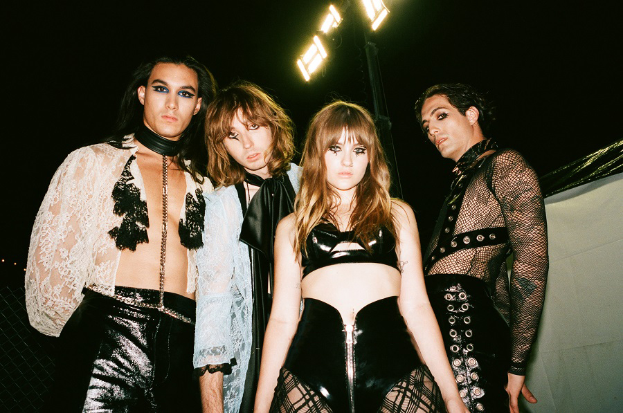

Self Introduction
- 自己紹介をお願いします！
情報システム科1-2 中根愛子です。
- 長所・短所は？
長所は物事を客観的に捉えれるところです。短所は大雑把なところです。
- 自分を動物に例えると何ですか？
オウムです。知識を吸収するのが得意だからです。
- 自分をIT機器に例えると何だと思いますか？
スマートフォンです。柔軟性があり、臨機応変に対応できるからです。
- ストレス発散方法はありますか？
美味しいものを食べることです。
- 一つ夢が叶うとしたら何をお願いしますか？
機能的な家に住みたいです。
- 今後働く上で、モチベーションを高めるものは何だと思いますか？逆に、下げるものは何だと思いますか？
モチベーションを高めるのは”誰かのため”に働くことだと思います。逆に下げるのはやりがいを感じない仕事をしてる時だと思います。
- 100万円あったら何に使いますか？
財布とアクセサリーを買います。
- 「オススメの○○」を教えてください！
オススメのバンドはMÅNESKINです。歌も見た目も刺激的です。この間のJAPANライブ観に行きました。
